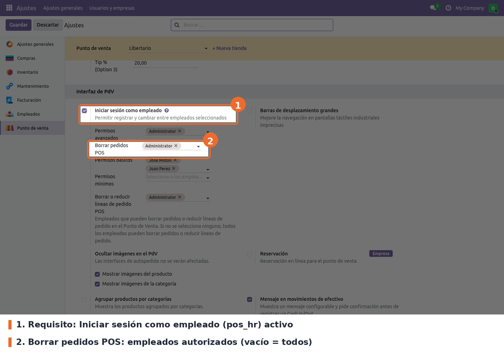
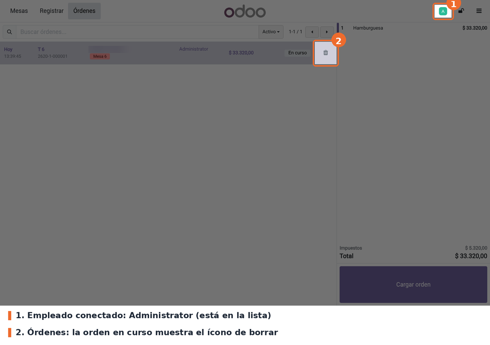
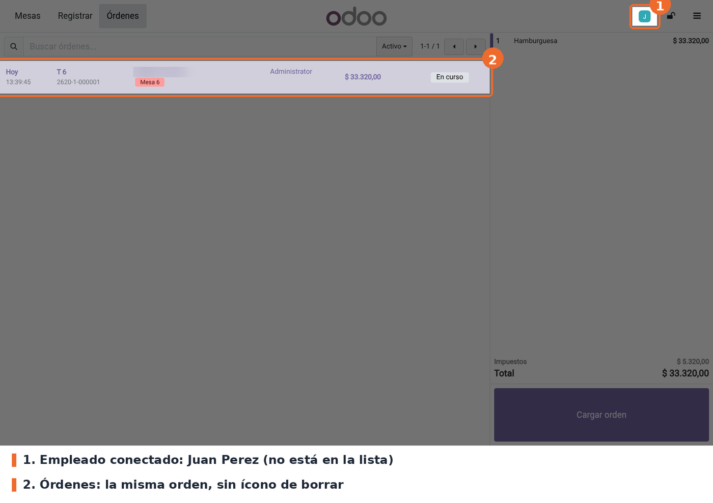
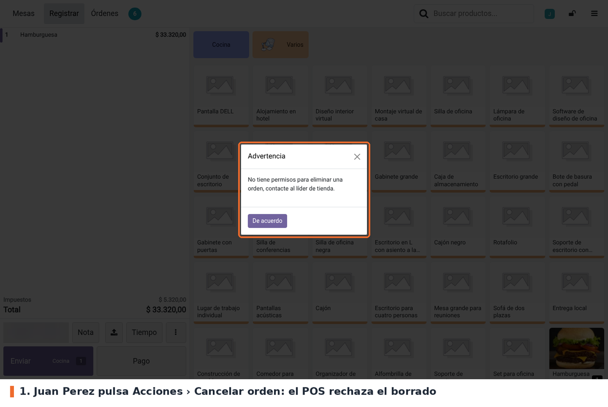

Limita qué empleados pueden eliminar órdenes en el Punto de Venta. Cada punto de venta tiene una lista de empleados autorizados. Si el empleado que tiene la caja está en la lista, puede eliminar órdenes como siempre. Si no está, el POS oculta el ícono de borrar en la pantalla de Órdenes y rechaza la acción Cancelar orden con el aviso "No tiene permisos para eliminar una orden, contacte al líder de tienda.".
Existe para que un cajero o mesero no pueda borrar una orden abierta (y con ella la venta) sin pasar por el líder de tienda.
Con la lista vacía, todos los empleados pueden eliminar órdenes. Así se comportaba el POS antes de instalar el módulo.
point_of_sale y pos_hr (Odoo Community). pos_hr hace falta porque el permiso se asigna a
empleados (hr.employee) y se evalúa sobre el empleado que inició sesión en el POS. No hay
dependencias externas ni librerías de Python adicionales.Instalar el módulo desde Aplicaciones. No crea modelos ni permisos de acceso: agrega un campo a la configuración del punto de venta y dos archivos JavaScript al POS. Después de instalar o actualizar, hay que volver a entrar al POS desde el backend para que cargue los archivos nuevos.
El campo conserva el nombre técnico y la tabla de relación de Odoo 17 (able_del_employee_ids,
pos_config_able_del_employee_rel), así que la lista de empleados autorizados se mantiene sin
script de datos.
Cambió el identificador de la vista de Ajustes (view_hr_employee_inh_form pasó a
res_config_settings_view_form_inherit_pos_del_order). Al actualizar, Odoo borra la vista vieja y
crea la nueva, sin intervención manual.
Ir a Punto de venta › Configuración › Ajustes, elegir el punto de venta en la parte superior y buscar el bloque Interfaz de PdV.

Punto de venta › Configuración › Ajustes › Interfaz de PdV: Iniciar sesión como empleado y Borrar pedidos POS
pos_hr). Requisito. El campo del módulo
solo aparece con esta casilla marcada y guardada, y el control usa el empleado que inició sesión
en la caja.able_del_employee_ids de pos.config). Opcional; vacío por
defecto. Lista de empleados de la compañía que pueden eliminar órdenes. Vacío significa que
todos pueden (el campo muestra "Todos los empleados").A tener en cuenta:
pos_restrict_del_ordered_order_line) y no tiene efecto sobre esta regla.pos_hr ya no ven el ícono ni el botón Cancelar
orden, aunque estén en esta lista. Esa restricción es de Odoo.Con un empleado de la lista en la caja, la pantalla Órdenes muestra el ícono de borrar en las órdenes en curso. Al pulsarlo, Odoo pide la confirmación habitual ("... ¿Está seguro de que desea eliminar esta orden?") y, si se acepta, la orden desaparece del POS. Si la orden ya estaba sincronizada, en el backend queda en estado Cancelado.

Pantalla Órdenes con un empleado autorizado: aparece el ícono de borrar
Con un empleado que no está en la lista, la misma orden aparece sin el ícono de borrar.

Pantalla Órdenes con un empleado no autorizado: la orden no tiene ícono de borrar
Si ese empleado intenta eliminar la orden desde la pantalla de productos (⋮ › Cancelar orden), el POS muestra el aviso Advertencia y la orden no se toca.

Aviso al pulsar Cancelar orden sin permiso
pos.order puede cancelar una orden aunque no esté en la lista. Un control real necesitaría una
validación en pos.order o usar los roles de pos_hr (permisos avanzados, básicos y mínimos),
que son el mecanismo nativo de Odoo 19.beforeDeleteOrder, que usan
el ícono de Órdenes y Cancelar orden. Estos flujos llaman a deleteOrders directamente y no
quedan restringidos: Transferir / Fusionar (la orden de origen se elimina después de pasar sus
líneas a la de destino), Liberar la mesa (solo con la orden vacía), la opción Cancelar
órdenes del cierre de sesión cuando quedan órdenes abiertas y la sincronización entre
dispositivos del restaurante.pos_hr activo en el
punto de venta, getCashier() devuelve el usuario (res.users) y el módulo compara su id con
ids de empleados. Si la lista quedó cargada de antes, el resultado no es confiable. El campo se
oculta en Ajustes en ese caso, pero el valor guardado se conserva._t, pero el módulo no trae
archivos de traducción.static/description/icon.png: en Aplicaciones se ve el ícono genérico de Odoo.models/pos_config.py: el campo able_del_employee_ids (Many2many a hr.employee, tabla
pos_config_able_del_employee_rel).models/res_config_settings.py: el campo relacionado pos_del_able_employee_ids, escribible
(readonly=False), que usa la pantalla de Ajustes.views/res_config_settings_views.xml: la fila Borrar pedidos POS, insertada después de
Permisos avanzados de pos_hr.static/src/app/services/pos_store.js: parche de PosStore.beforeDeleteOrder(). Si el empleado
no está autorizado, muestra el aviso y devuelve false antes de delegar en Odoo. Define
isEmployeeAllowedToDeleteOrders(), que usa también la pantalla de órdenes.static/src/app/screens/ticket_screen/ticket_screen.js: parche de
TicketScreen.shouldHideDeleteButton() para ocultar el ícono.pos.config no define _load_pos_data_fields y el
POS lee todos sus campos.TicketScreen.onDeleteOrder(), y el
botón Cancelar orden de la pantalla de productos (control_buttons.js, que llama a
pos.onDeleteOrder) lo saltaba. En 19 el control está en beforeDeleteOrder, por donde pasan
los dos caminos.config.raw. El store solo tiene cargados algunos empleados, y el getter
relacional podría no resolver los demás. Por eso el módulo usa los ids crudos.tests/test_delete_order_access.py cubre la configuración: lista vacía por defecto,
que Ajustes escriba en pos.config y que el relacionado sea escribible. El comportamiento en el
POS no tiene test automático: se valida a mano en el navegador.doc/historial_16_17/ quedan las notas de la migración 16→17, solo como historial.